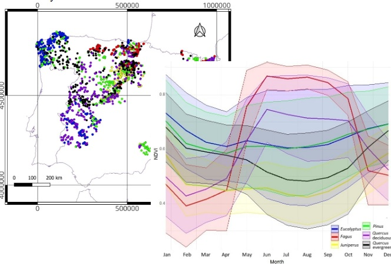
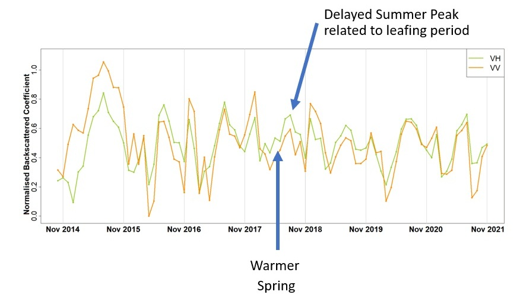
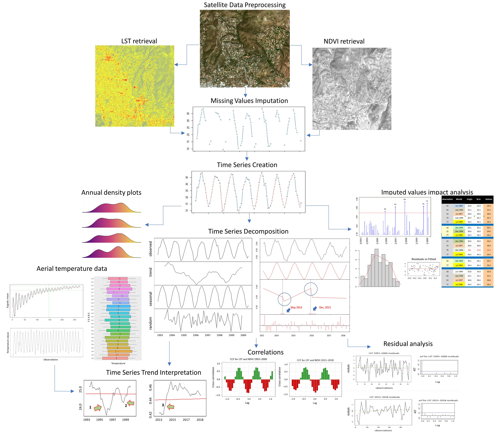
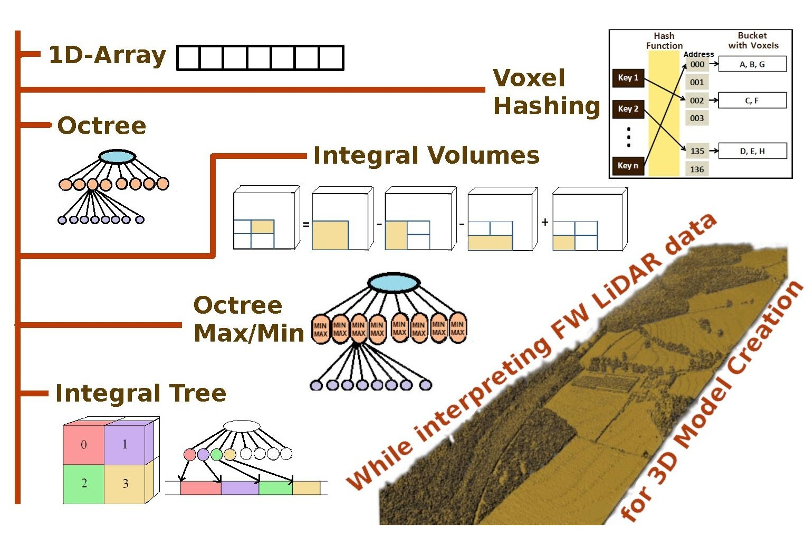
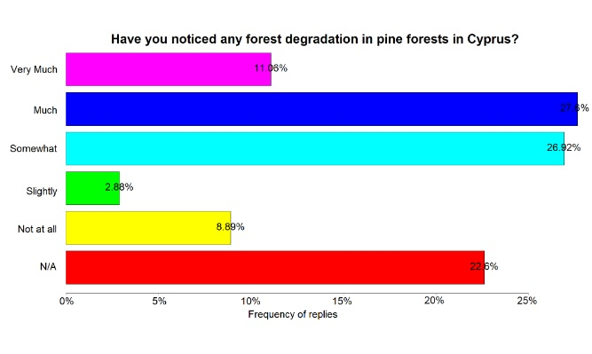
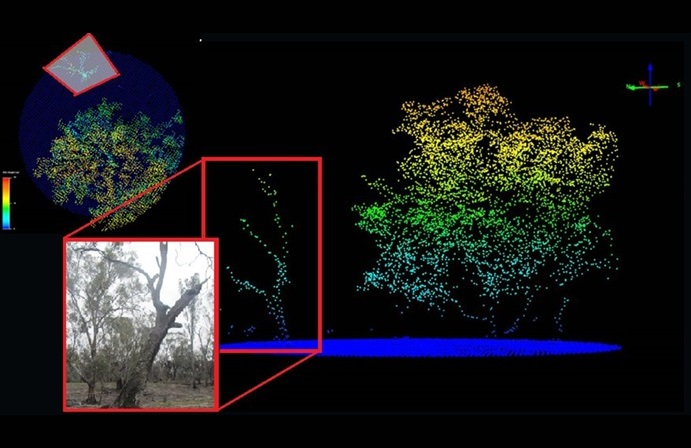
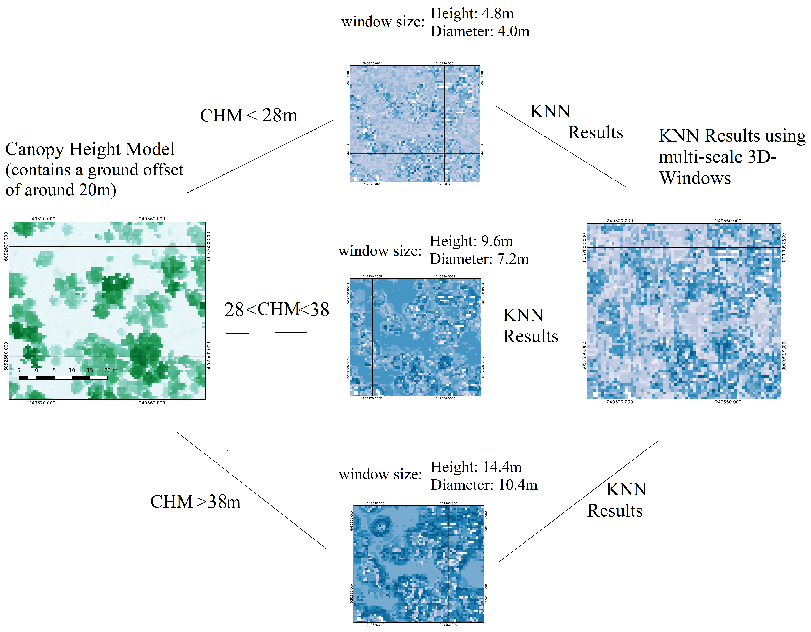
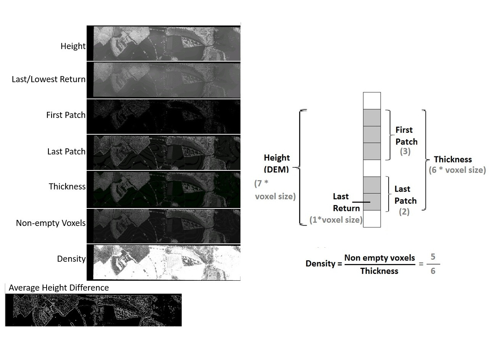

Peer-reviewed Papers
A comprehensive collection of peer-reviewed publications from the DASOS' Vision Group, with highlights provided for each paper.

PlotToSat: A tool for generating time-series signatures from Sentinel-1 and Sentinel-2 at field-based plots for machine learning applications
- PlotToSat automates the extraction of Sentinel-1 and Sentinel-2 time-series signatures at multiple regions.
- PlotToSat is user-friendly, with clear documentation and examples.
- It processed an estimate of 18.3TB of Sentinel-1/2 data within less than 24hours.
Time-series
Google Earth Engine
Learn More

Tree Genera Classifications in Spain using Time-series Sentinel-2 data extracted from PlotToSat
- PlotToSat optimised Sentinel-2 time-series extraction at around 15,000 plot regions.
- Monthly NDVI values were used to classify six dominant tree genera using the k-NN algorithm
- Downsampling improved representation of small genera but reduced F1-scores for large genera (e.g., Pinus, Quercus), highlighting challenges from high spectral variability in large classes.
Time-series
Sentinel-2
NDVI
Learn More

Time-series SAR data analysis for finding the drivers causing phenological changes in Paphos Forest, Cyprus
- In 2018, the warmer spring was associated with a delayed summer peak, coinciding with the leafing period of Pinus brutia.
- After the extended drought of winter 2015–16, the average backscatter coefficient dropped.
- Cold autumn temperatures kill Thaumetopoea pityocampa, which feeds annually on pine needles. A cold November was associated with a change in the SAR annual phenology.
time-series
SAR
conifers
phenology
Learn More

Time-series analysis of Landsat Data for investigating the relationship between Land Surface Temperature and forest changes in Paphos Forest, Cyprus
- The May 2014 NDVI increase, may relate to reduced Thaumatopea pityocampa activity due to cooler autumn temperatures.
- A sharp NDVI decline in December 2015 likely resulted from the earlier locust invasion.
Time-series
Landsat
LST
Learn More

A Comparative Study about Data Structures Used for Efficient Management of Voxelised Full-Waveform Airborne LiDAR Data during 3D Polygonal Model Creation
- The "Integral Trees" data structure category is introduced in this paper.
- Each data structure tested for 3D polygon creation has its own pros and cons
- "Integral Volues" is the faster but consumes the most memory, same as "1D-Array".
LiDAR
Polygonisation
Optimisation
Learn More

Do People Understand and Observe the Effects of Climate Crisis on Forests? The Case Study of Cyprus
- Participants noticed coniferous forest degradation—38.7% noted Much or Very Much and another 26.92% Moderate.
- The decreased soil moisture observed by the participants is also noted in the report “Climate Change, Impacts and Vulnerability in Europe 2016”.
- Older participants believed more than younger participants that climate change phenomena are important and affects us now.
Perception
Climate Change
Forests
Learn More

Detection of dead standing Eucalyptus camaldulensis without Tree delineation for managing biodiversity in native Australian forest
- It is possible to detect dead standing trees without tree delineation using object detection.
- The most important feature for detecting dead standing trees is the standard deviation of heights.
- The k-NN algorithm was appropriate due to the variation in tree shapes in native Eucalypt forest.
LiDAR
Object Detection
Biodiversity
Learn More

Detecting dead standing eucalypt trees from voxelised full-waveform lidar using multi-scale 3D-windows for tackling height and size variations
- Multi-scale windows improves both recall and precision in detecting dead standing trees in native Eucalypt forest
- By voxelising LiDAR waveform data and extracting structural features in 3D, the applicability of DASOS for detecting dead standing eucalypt trees is demonstrated.
LiDAR
Object Detection
Biodiversity
Learn More

Open source software DASOS: efficient accumulation, analysis, and visualisation of full-waveform LiDAR.
- DASOS is an open-source LiDAR software that employs a rasterisation process to tackle the problem of uneven LiDAR point cloud density.
- DASOS computes multiple metrics from both LiDAR and hyperspectral data, such as standard deviation of heights, distribution of non-empty voxels, spectral signatures, aligned spatially.
- DASOS creates 3D polygons from LiDAR data.
DASOS
LiDAR
Hyperspectral
Learn More

Alignment of hyperspectral imagery and full-waveform LIDAR data for visualisation and classification purposes.
- FW LiDAR waveforms are converted into a 3D discrete density volume and polygonised using the Marching Cubes algorithm, producing detailed polygonal meshes.
- Integration of FW LiDAR and hyperspectral imagery increased classification accuracy from 86.34-87.58% (single datasets) to 92.97% (combined datasets).
LiDAR
Hyperspectral
Learn More